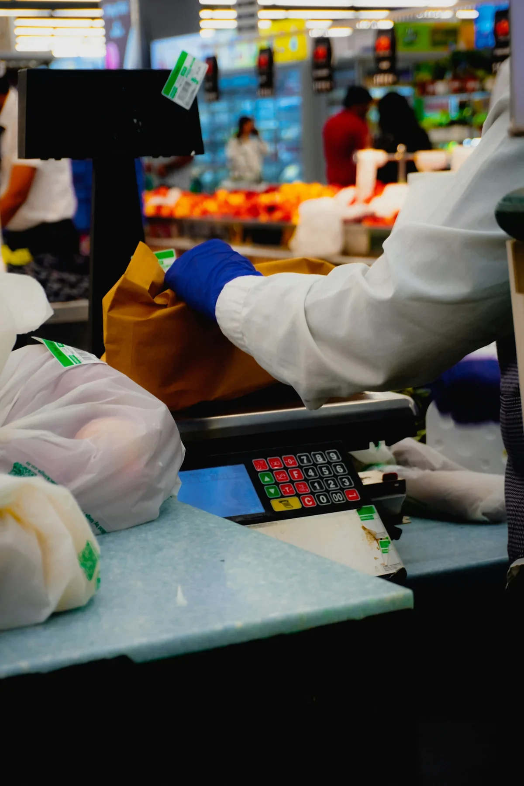

Limburgse vlaai
Voor koffie, dessert, vergaderbreaks en arrangementen. Klein snijden maakt het toegankelijk en margegericht.
Toepassing op de kaart: Mini-vlaaiproeverij, koffiedeal of hotelarrangement.
Bekijk toepassingAssortiment
Geen webshop, maar een overzicht van productgroepen waarmee je snel lokale accenten aan je kaart kunt toevoegen.
Voor koffie, dessert, vergaderbreaks en arrangementen. Klein snijden maakt het toegankelijk en margegericht.
Toepassing op de kaart: Mini-vlaaiproeverij, koffiedeal of hotelarrangement.
Bekijk toepassing
Een herkenbaar lokaal product dat weinig voorbereiding vraagt en goed combineert met brood, noten en zoet.
Toepassing op de kaart: Lunchspecial, borrelplank of kaas van de week.
Bekijk toepassing
Flexibel inzetbaar doordat je kunt wisselen met beschikbaarheid, prijs en seizoen.
Toepassing op de kaart: Vegetarische special, buffetcomponent of warme groentegarnituur.
Bekijk toepassing
Combineer kaas, brood, groenten, spreads en noten tot één verkoopbaar concept.
Toepassing op de kaart: Sharingplank, terrasactie of zakelijke borrel.
Bekijk toepassing
Een praktische manier om producten te testen met team of keuken voordat ze op de kaart komen.
Toepassing op de kaart: Interne proeverij of menukaartontwikkeling.
Bekijk toepassing
Materiaal dat helpt om het lokale verhaal kort en duidelijk richting gast te maken.
Toepassing op de kaart: Tafelkaart, buffetkaartje, menukaarttekst of QR-verwijzing.
Bekijk toepassing